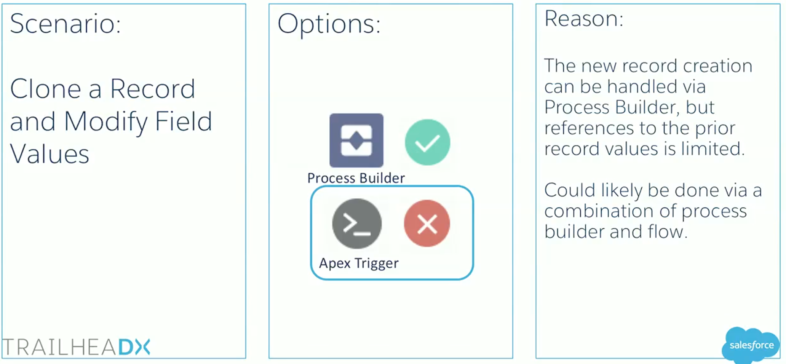

{{appName}} - click the boxes for details
Process Builder goals
- Advanced Business Logic without Code
- Speed to Deliver
- Ease of Maintenance and Supportability
- Largely Deprecates Traditional Workflow
- Replicates Some Common Trigger use-cases
Core Capabilities
- Email Alerts
- Field Updates
- Create Records
- Related Record Updates
- Chatter posts
- Approval Submission
- Quick Actions
- Apex and Flow Invocation
- AND/OR Conditional logic support
- Enhanced Bulkification (backend)
- Additional Process Invocation (chaining)
Why not Process Builder
- Consolidated Process Logic is required
- Complex logic
- Testability is critical
1. Populate a lookup filed on record update
2. Set owner based on Record Criteria
3. Post to chatter based on Record Criteria
4. Submit a Quote based on the Opportunity Stage
5. Cloning a Record and Modify Field Values

Process Builder Limitations
- Complex Logic: Apex Trigger
- Programmatic logic abstracted in Custom settings/metadata-types
- Rapid Iteration in Process Builder can be challenging (deployment, versioning...)
- Unit Test requirements for the critical processes